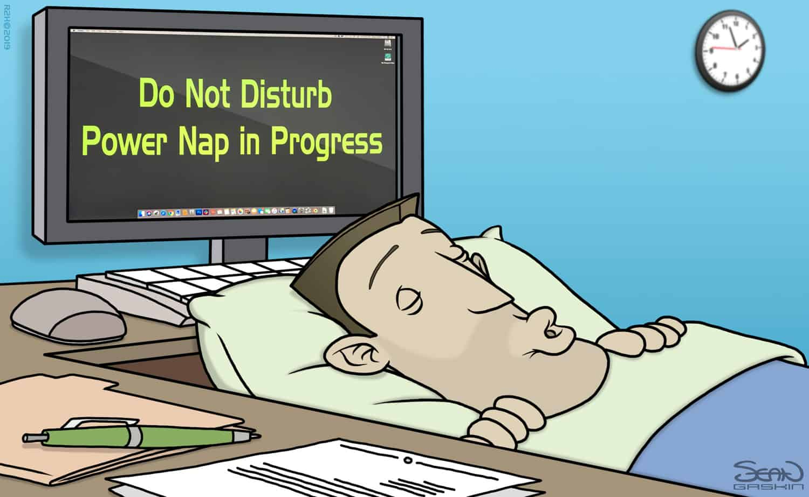

The Perfect Nap: How Long, When, and Why

2:47 PM. Your eyelids weigh about twelve pounds each. You have a meeting at 3:30. You're pretty sure you just typed the same sentence three times and then deleted it. Should you nap?
I get this question constantly. People think naps are either magic or dangerous. Like you'll either wake up as a new person or you'll wake up wanting to fight a moose. The reality is somewhere in the middle, and it depends entirely on three things: how long you nap, when you nap, and what you do immediately after waking up.
Let me save you the trial and error. I've done the trial. I've done the error. I once set a forty-five-minute alarm, woke up convinced I had missed an entire day, and called my husband to ask what year it was. He still brings this up at dinner parties. So I know what doesn't work. And I know what does.
That forty-five-minute disaster happened in grad school, around 2012. I'd been up since 4 AM working on a grant proposal. By 2 PM, I couldn't see straight. I lay down on the couch in the lab's break room, set my phone for forty-five minutes, and closed my eyes. When the alarm went off, I didn't just feel tired. I felt poisoned. My head throbbed. I was disoriented. I literally didn't know where I was for about ten seconds. I stumbled to the bathroom, looked in the mirror, and thought, "I look like I just survived a plane crash."
That's sleep inertia. It happens when you wake up in the middle of deep sleep. A sleep cycle is about ninety minutes. The first twenty to thirty minutes are light sleep. Then you hit deep sleep around minute twenty-five to forty. So if you set a forty-five-minute alarm, you're waking up right in the middle of deep sleep. Your brain is swimming in delta waves. You pull it out too fast, and it punishes you.
The fix is almost insultingly simple: nap for either twenty minutes or ninety minutes. Nothing in between. Twenty minutes keeps you in light sleep. You wake up feeling okay — maybe a little groggy for five minutes, but fine. Ninety minutes gives you a full cycle: light, deep, REM, then light again. You wake up at the end of a cycle, so no inertia. Forty-five or sixty minutes? Those are the naps of death. Don't do them.
A woman named Priya was taking fifty-minute naps every day after work. She told me she woke up "angry at the universe." I told her to cut it to twenty minutes. She tried it for a week. Then she sent me a message: "I no longer want to throw my phone across the room. Thank you." That's not a placebo. That's physiology.
Okay, but what about that ninety-minute nap? Who has time for that? Fair point. Most people don't have ninety minutes in the middle of the day. I don't. Leo's school pickup is at 3 PM. My husband works from home and takes calls until 4. A ninety-minute nap would mean ignoring both of them, which sounds nice in theory but would probably end my marriage.
So the practical answer is the twenty-minute power nap. Here's how to do it without fail: lie down somewhere dark. Set your alarm for twenty-five minutes — not twenty. Because you need about five minutes to actually fall asleep. So twenty-five minutes on the clock gives you twenty minutes of actual sleep. Keep your phone on vibrate under your pillow or next to your ear. You want to wake up to a gentle buzz, not a screeching alarm. Screeching alarm equals cortisol spike equals groggy. When the alarm goes off, sit up immediately. Do not hit snooze. Do not "just close my eyes for one more minute." Sit up, put your feet on the floor, drink some water. That's it.
I know it sounds too simple. But I've coached maybe sixty people on this, and the ones who fail are the ones who try to "optimize" it — "what if I do twenty-two minutes instead?" "what if I listen to binaural beats?" "what if I drink coffee right before?" Just follow the simple version. It works.
There's a study from the UK, came out around 2019, that said people who nap regularly have a higher risk of heart disease. It made headlines everywhere. My mother sent it to me with a frowny face. Here's what the study actually found: people who napped for more than sixty minutes had a slightly higher risk. People who napped for less than thirty minutes had no increased risk. And the study didn't control for why people were napping. People who nap for ninety minutes might be doing it because they have untreated sleep apnea or insomnia. The nap isn't the problem. The underlying sleep disorder is. So no, naps are not bad for you. Long, poorly timed naps that wreck your nighttime sleep? Those are bad. But a twenty-minute nap at 1 PM? That's just a maintenance break.
A colleague at CU Boulder studied this. She found that a twenty-minute nap improves alertness for two to three hours with no negative effect on nighttime sleep, provided you take it before 3 PM. After 3 PM, you risk stealing sleep from the next night. Because your circadian rhythm has a "forbidden zone" for sleep in the late afternoon. If you nap too late, you might not be tired at your normal bedtime. So the rule is nap before 3 PM, keep it under thirty minutes, or nap for exactly ninety minutes if you have the time and won't mess up your next bedtime.
You've probably heard of the coffee nap. Drink a cup of coffee right before a twenty-minute nap. The caffeine takes about twenty minutes to kick in. So you wake up with both the benefits of the nap and a caffeine jolt. I tried it. It works. But it's uncomfortable. You have to chug the coffee quickly, then lie down immediately. Drinking a whole cup of coffee in under a minute, then trying to fall asleep, feels like a race. My heart pounds from the chugging. Then I lie there thinking about my heart pounding. I prefer to just take the nap and have coffee after. But if you're desperate — like, "I have to drive for three more hours and I'm hallucinating" desperate — the coffee nap is legit. There's a study from Japan, 2008, where they tested this on truck drivers. The drivers who did the coffee nap had fifty percent fewer lane departures than drivers who only drank coffee or only napped. Fifty percent. That's not nothing.
Can you nap at your desk? If you have an office with a door, yes. Close the door, set an alarm, put your head on your desk. Nobody will know. If you work in an open office, it's complicated. Some companies have nap pods. Most don't. I've had clients who nap in their cars during lunch. I've had clients who nap in the bathroom stall. Please don't do this. I've had clients who just go to a coffee shop, find a quiet corner, and set an alarm. The best solution is to negotiate with your manager. Say: "I'm going to take twenty minutes at lunch to rest. I'll work twenty minutes later to make up for it." Most reasonable managers will say yes. The unreasonable ones? Find a new job. Life's too short to work for someone who doesn't understand basic human biology. I realize that's privileged advice. Not everyone can just "find a new job." So if you're stuck, nap in your car. It's not ideal, but it's better than falling asleep at your desk and drooling on your keyboard. Ask me how I know. It was 2010. I was a postdoc. I drooled on a grant application. The PI saw it. I wanted to die.
What about naps for kids? My three-year-old refuses. Oh, I feel this in my bones. Leo stopped napping at age two and a half. He's seven now. I still miss those afternoon breaks. The truth is you cannot force a child to nap. You can only create the conditions. Dark room. White noise. Same time every day. No screens for thirty minutes before. If they don't sleep, they don't sleep. But keep the "quiet time" anyway. Tell them they have to stay in their room for forty-five minutes with books or quiet toys. Sometimes they fall asleep. Sometimes they don't. But at least you get forty-five minutes of not being touched or asked for a snack. That's not sleep science. That's survival science.
A mom of twins came to me losing her mind because her four-year-olds wouldn't nap. I told her to switch to "rest time." Put on an audiobook. Close the curtains. Lie down with them for the first ten minutes. They fell asleep within a week. Not because of the technique. Because they were exhausted and finally had permission to stop. Kids are weird. They fight sleep like it's an enemy. Then they collapse face-down in their mac and cheese.
When you feel that 2 PM crash, open the planner. Tell it how tired you are on a scale of one to ten and what time you have to be awake. It'll tell you: nap for twenty minutes now, or wait until 4:30 and take a ninety-minute nap, or don't nap at all because you have to drive in fifteen minutes and sleep inertia is dangerous. The "don't nap" recommendation is important. If you have less than thirty minutes before you need to be fully alert, a nap will make you worse. Not better. You'll wake up groggy and be dangerous behind the wheel or useless in a meeting. So the tool sometimes says "just drink water and stand up." That's not a bug. That's me trying to keep you from making a mistake I've made a hundred times.
You also need to think about your overall sleep debt. Naps are great, but they're not a substitute for nighttime sleep. If you're chronically sleep-deprived, a twenty-minute nap is like putting a band-aid on a broken leg. It helps in the moment, but you still need to fix the root problem.
If you're napping because you're exhausted all the time, that's a sign. Don't ignore it. Use the debt tracker to see how much sleep you're actually missing. Then make a plan. Naps are a tool, not a lifestyle.
One last thing about alarms. I said this earlier but it's worth repeating. Do not use a jarring, loud alarm for naps. Your brain is already confused about waking up in the middle of the day. A screeching alarm adds stress. Use a gentle, rising alarm. Something that starts quiet and gets louder. Or vibrate only. Or one of those "sunrise" alarms if you have one. I use the "Silk" ringtone on my iPhone. It's soft, kind of like a harp. My husband says it sounds like a spa. That's the goal. You want to wake up gently, not like you're being evacuated from a burning building. I literally changed my alarm sound after a client told me her old alarm — the default "Radar" tone — made her heart race every time she heard it. She switched to "Silk" and said her nap recovery time dropped from twenty minutes to five. That's not placebo. That's cortisol.
Naps are good. Bad naps are bad. The difference is length and timing. Twenty minutes, before 3 PM, gentle alarm, sit up immediately. That's the formula. Ninety minutes if you have the time and won't mess up your bedtime. Never forty-five. Never sixty. And never in a moving car. Yes, someone asked me that once. No, I'm not kidding.
P.S. I tried a ninety-minute nap last Saturday. I woke up convinced it was Sunday. My husband said, "It's still Saturday. You napped for an hour and a half." I didn't believe him until I checked my phone. So ninety-minute naps are effective but disorienting. Use with caution.